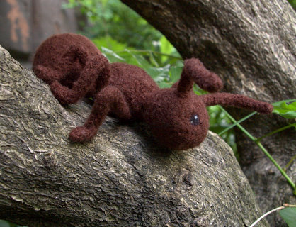

|
||
Premium Patterns Wintry Mix Mitts Love Bytes HawkeyeFree Patterns Kiddie Cadet Summerlin Ruffled Scarf Seamless DS Sock Simply Seamless Pouch Myriads of MushroomsExtras DIY Mitten Blocker Felt Patch Tutorial Yarn Dyeing Tutorial Needle Pouches Knitting Journal |
May 15, 2007 - Posted by Grace SchneblyQuick! Call an exterminator!I thought I would kick off spring in Boston by making the adorable ant from Crafty Alien's new pattern Buggin’ Out! Volume One. This pattern has the instructions to make three cute felted little insects an ant, lady bug, and bumble bee.  Project Specs This ant was super easy to knit, it required only basic increase and decreases. The legs are a little tedious and I am really glad I made them from i-cords instead of knitting them flat. That would have been REALLY time consuming because you would have to seam every single one of them! I think the only really boring part of making this guy was shaping the ant leg before felting, but I guess it is necessary to get that ant leg look. I felted all the parts last night by hand. The legs and antennae felted really quickly, but I had to work with the body quite a bit. When I stopped you could still see some of the lines created by the increases/decreases but there wasn’t any stitch definition anywhere else. It easily dried over night since it was so small. I dreaded seaming it together, but it actually wasn’t as bad as I thought it would be! I figured out a really good trick to make the seams almost invisible. If you’re using a plied wool, split them apart and use a single ply as your thread. This way it will match the color and texture of your felted fabric exactly. Sometimes if you pull too hard or it gets untwisted it can pull apart though so you have to be kind of careful. Also I just needle felted in the ends of the ply instead of having to knot it and dawn it up into the body. I think it really speeded up the whole process and made it a whole lot less sloppy looking than my seaming can sometimes turn out. I think they're also attached more securely than if I had just used thread, which is a major plus especially if given to a kid. I needle felted the eyes on using a 40 gauge felting needle and scrap black and white wool yarn. It was so easy to do and it really cut down on the finishing time for me! I was also able to fix some of the decrease lines by needle felting some of the brown yarn over them. I really like how she came out. It's really cute and actually bigger than I thought she would be. It ended up being almost 6” long and the widest part of the abdomen is just under 2”. Eventually I want to make a whole army of these guys (and try making a variety of ant species), but I don’t think I have the patience to sit down and make a bunch at a time. It turned out really cute though and I am glad I switched the body around… I still can’t image the big part as the head! I did have a few problems with this pattern though. The legs can’t support the weight of the body, but I wonder if you could get some wire to thread into them. I think that would also help them keep their shape because they’re a little floppy. There was also an error half way through the body portion of the pattern… I emailed Crafty Alien and she said she would fix it, but I haven’t got the updated version yet. Also the pattern was a little delayed getting to me. I ordered it on the 9th and it didn’t get sent to me until the 12th. It was just kind of annoying because I really wanted to get started on this pattern (and they said they ship within 24 hours)!! Anyways I am glad I got it, and I will be making the bee and ladybug soon. Hopefully I will have the bee finished tomorrow then the lady bug sometime later this week. |
   Recent ReviewsRecent Posts
 Our Favorites
|
| © 2007 KathrynIvy.com | ||
{kind=link}
{kind=link}